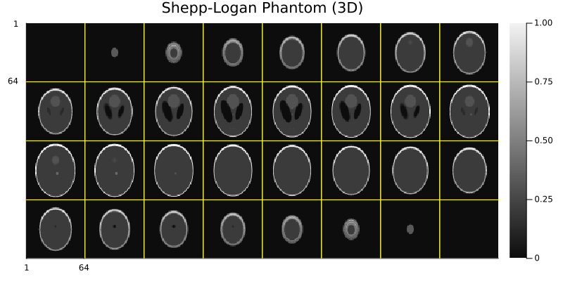
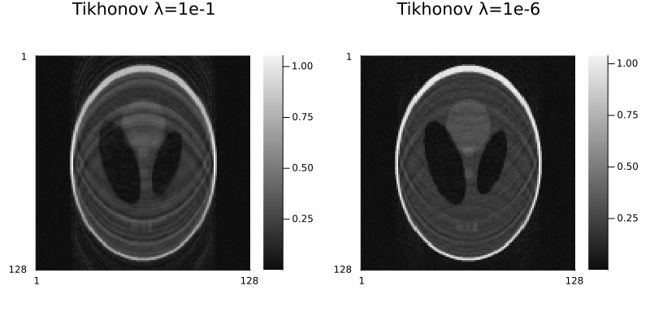
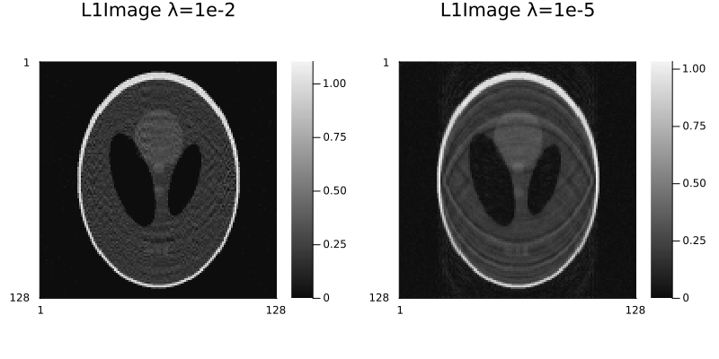
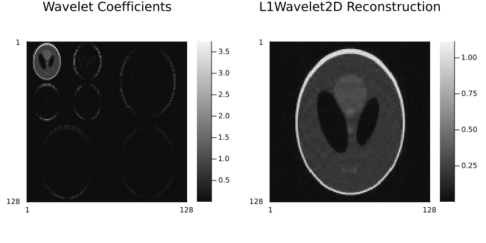
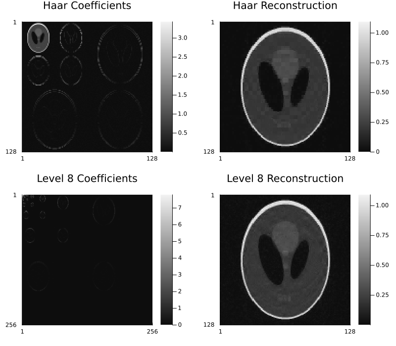
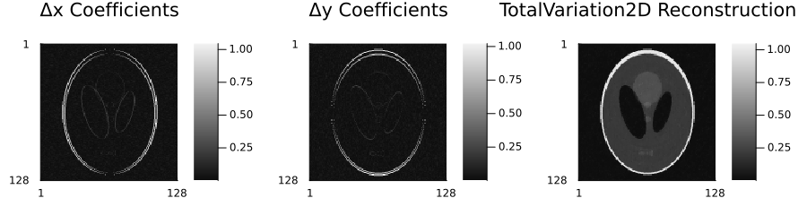

Regularization
Regularization is essential for reconstructing high-quality images from undersampled k-space data. This page explains the available regularization methods and how to use them.
Why Regularization?
When k-space is undersampled (as in compressed sensing or parallel imaging), the reconstruction problem becomes ill-posed - there are many possible images that could have produced the observed data. Regularization adds prior knowledge about what "good" images look like to guide the reconstruction toward a unique, high-quality solution.
Understanding the Math
For those interested in the mathematical details, the reconstruction solves:
minimize (1/2)‖E·x - y‖₂² + ∑ᵢ λᵢ·Rᵢ(x)Where:
Eis the encoding operator (Fourier + sensitivity + subsampling)xis the image to reconstructyis the observed k-space data‖E·x - y‖₂²is the data fidelity termRᵢ(x)are the regularization termsλᵢare the regularization parameters
The first term ensures the reconstruction is consistent with observed data. The regularization terms encode prior knowledge about image properties.
Available Regularization Methods
The code snippets in the following sections assume that MriReconstructionToolbox and MIRTjim are already imported. MIRTjim is a convenience wrapper around Plots.jl for displaying multidimensional images. Also, assume you have an AcquisitionInfo object acq representing your k-space data and acquisition settings for simulated Shepp-Logan phantom:
using MriReconstructionToolbox
using MIRTjim: jim
# Simulate 2D acquisition
x = shepp_logan(128, 128)
x_noisy = x + 0.02f0 * randn(ComplexF32, 128, 128)
smaps = coil_sensitivities(128, 128, 8)
pdf = VariableDensitySampling(PolynomialDistribution(3), 4.0, 0.05)
pattern = create_sampling_pattern(pdf, (128, 128))
acq_full = AcquisitionInfo(
is3D=false,
image_size=(128, 128),
subsampling=pattern,
sensitivity_maps=smaps
)
data = simulate_acquisition(x_noisy, acq_full)
# Simulate 3D acquisition
x3d = shepp_logan(64, 64, 32)
smaps3d = coil_sensitivities(64, 64, 32, 8)
subsampling3d = create_sampling_pattern(
VariableDensitySampling(PolynomialDistribution(3), 4.0, 0.05),
(64, 64, 32)
)
acq3d = AcquisitionInfo(
image_size=(64, 64, 32),
sensitivity_maps=smaps3d,
subsampling=subsampling3d,
)
data3d = simulate_acquisition(x3d, acq3d)
jim(x3d; title="Shepp-Logan Phantom (3D)", size=(800,400))GKS: cannot open display - headless operation mode active
Image Domain Regularization
Tikhonov (L2) Regularization
The simplest form of regularization, penalizing large pixel values:
MriReconstructionToolbox.Tikhonov — Type
Tikhonov(λ)Create a Tikhonov regularization term with parameter λ.
The regularization term is given by λ²‖x‖₂², or ‖Γ .* x‖₂² if λ is an array Γ of the same size as x.
Arguments
λ: Regularization parameter, can be a scalar or an array of the same size asx.
Notes
- This regularization term is also known as L2 regularization or ridge regression.
- The squared parameter
λ²is used in the formulation to align with common conventions in
Tikhonov regularization literature.
sourceWhen to use:
- Noise reduction without strong assumptions about image structure
- As a baseline for comparison with other methods, especially for parallel imaging
- Fast and simple regularization (it is computationally cheap and can be optimized with Conjugate Gradient)
Example:
img₁ = reconstruct(data, Tikhonov(1e-1), verbose=false)
img₂ = reconstruct(data, Tikhonov(1e-6), verbose=false)
p1 = jim(img₁; title="Tikhonov λ=1e-1")
p2 = jim(img₂; title="Tikhonov λ=1e-6")
jim(p1, p2; layout=(1,2), size=(800,400))
L1 Regularization
Promotes sparse images (many pixels close to zero):
MriReconstructionToolbox.L1Image — Type
L1Image(λ)Create a L1 image regularization term with parameter λ. The regularization term is given by λ‖x‖₁, or ‖Γ .* x‖₁ if λ is an array Γ of the same size as x.
Arguments
λ: Regularization parameter, can be a scalar or an array of the same size asx.
When to use:
- Images that are naturally sparse (e.g., angiography) and you want to suppress small values
Example:
img₁ = reconstruct(data, L1Image(1e-2), verbose=false)
img₂ = reconstruct(data, L1Image(1e-5), verbose=false)
p1 = jim(img₁; title="L1Image λ=1e-2")
p2 = jim(img₂; title="L1Image λ=1e-5")
jim(p1, p2; layout=(1,2), size=(800,400))
Wavelet Domain Regularization
2D Wavelet Sparsity
Promotes sparsity in the wavelet domain:
MriReconstructionToolbox.L1Wavelet2D — Type
L1Wavelet2D(λ; wavelet=WT.db2, levels=2)Create a L1 wavelet regularization term for 2D images with parameter λ. The regularization term is given by λ‖𝒲x‖₁, where 𝒲 is the 2D wavelet transform operator. The wavelet and levels parameters control the type of wavelet and the number of decomposition levels used in the transform.
Arguments
λ: Regularization parameter, can be a scalar or an array of the same size asx.wavelet: (optional) Type of wavelet to use, specified as aWT.Wavelet. Default isWT.db2(Daubechies 2).levels: (optional) Number of decomposition levels in the wavelet transform. Default is2.
When to use:
- Natural images with structure at multiple scales
- Most MRI applications (anatomy has multi-scale features)
- Standard compressed sensing reconstruction
Parameters:
λ: Regularization strength (try 1e-3 to 1e-2)wavelet: Wavelet type (default: Daubechies, also try Haar, etc.)levels: Number of decomposition levels (default: 4)
Example:
reg = L1Wavelet2D(1e-3)
example_img = rand(ComplexF32, 128, 128)
op = get_operator(reg, example_img)
transformed = op * x_noisy
p1 = jim(transformed; title="Wavelet Coefficients")
img = reconstruct(data, reg, verbose=false)
p2 = jim(img; title="L1Wavelet2D Reconstruction")
jim(p1, p2; layout=(1,2), size=(800,400))
Options for L1Wavelet2D:
wavelet: Specify wavelet type (e.g.,WT.haar,WT.db4)levels: Number of decomposition levels (default: 4)
reg_haar = L1Wavelet2D(1e-2; wavelet=WT.haar)
op_haar = get_operator(reg_haar, example_img)
transformed_haar = op_haar * x_noisy
img_haar = reconstruct(data, reg_haar, verbose=false)
p1 = jim(transformed_haar; title="Haar Coefficients")
p2 = jim(img_haar; title="Haar Reconstruction")
reg_level8 = L1Wavelet2D(1e-3; levels=8)
op_level8 = get_operator(reg_level8, example_img)
transformed_level8 = op_level8 * x_noisy
img_level8 = reconstruct(data, reg_level8, verbose=false)
p3 = jim(transformed_level8; title="Level 8 Coefficients")
p4 = jim(img_level8; title="Level 8 Reconstruction")
jim(p1, p2, p3, p4; layout=(2,2), size=(800,700))
3D Wavelet Sparsity
For volumetric / multislice data, promotes sparsity in 3D wavelet domain:
MriReconstructionToolbox.L1Wavelet3D — Type
L1Wavelet3D(λ; wavelet=WT.db2, levels=2)Create a L1 wavelet regularization term for 3D images with parameter λ. The regularization term is given by λ‖𝒲x‖₁, where 𝒲 is the 3D wavelet transform operator. The wavelet and levels parameters control the type of wavelet and the number of decomposition levels used in the transform.
Arguments
λ: Regularization parameter, can be a scalar or an array of the same size asx.wavelet: (optional) Type of wavelet to use, specified as aWT.Wavelet. Default isWT.db2(Daubechies 2).levels: (optional) Number of decomposition levels in the wavelet transform. Default is2.
When to use:
- 3D acquisitions or multi-slice 2D data
- When you want to exploit 3D structure
Example:
reg3d = L1Wavelet3D(1e-3)
op = get_operator(reg3d, rand(ComplexF32, 64, 64, 32))
transformed = op * x3d
jim(abs.(transformed); title="3D Wavelet Coefficients", size=(800,400))
Total Variation
2D Total Variation
Promotes piecewise-constant images by penalizing rapid changes:
MriReconstructionToolbox.TotalVariation2D — Type
TotalVariation2D(λ)Create a Total Variation regularization term for 2D images with parameter λ. The regularization term is given by λ‖Δx‖_{2,1}, where Δ is the 2D finite difference operator computing gradients along the two spatial dimensions.
Arguments
λ: Regularization parameter, must be a scalar.
When to use:
- Images with sharp edges and flat regions
- Brain imaging with gray/white matter boundaries
- When you want strong edge preservation
Example:
reg = TotalVariation2D(1e-3)
op = get_operator(reg, example_img)
transformed = op * x_noisy
img = reconstruct(data, reg, verbose=false)
p1 = jim(transformed[:,:,1]; title="Δx Coefficients")
p2 = jim(transformed[:,:,2]; title="Δy Coefficients")
p3 = jim(img; title="TotalVariation2D Reconstruction")
jim(p1, p2, p3; layout=(1, 3), size=(900,250))
Practical tip: TV can create a "cartoon-like" appearance. Use lower λ values (1e-4 to 5e-3) to preserve texture.
3D Total Variation
For volumetric / multislice data, promotes piecewise-constant structure in 3D:
MriReconstructionToolbox.TotalVariation3D — Type
TotalVariation3D(λ)Create a Total Variation regularization term for 3D images with parameter λ. The regularization term is given by λ‖Δx‖_{2,1}, where Δ is the 3D finite difference operator computing gradients along the three spatial dimensions.
Arguments
λ: Regularization parameter, must be a scalar.
Temporal Regularization
Temporal Fourier Sparsity
For dynamic imaging, promotes sparsity in the temporal Fourier domain:
MriReconstructionToolbox.TemporalFourier — Type
TemporalFourier(λ; time_dim=nothing)Create a temporal Fourier regularization term with parameter λ. The regularization term is given by λ‖𝓕ₜ{x}‖₁, where 𝓕ₜ is the discrete Fourier transform along the temporal dimension specified by time_dim. If time_dim is not provided, it will be inferred as the dimension named :time if x is a NamedDimsArray.
Arguments
λ: Regularization parameter, can be a scalar or an array of the same size asx.time_dim: (optional) Dimension along which to apply the Fourier transform. Can be anInteger(1-based index)
or a Symbol (dimension name). If not provided, it will be inferred as the dimension named :time if x is a NamedDimsArray.
When to use:
- Dynamic or cine imaging
- Cardiac MRI
- DCE-MRI (dynamic contrast enhanced)
- When motion is periodic or smoothly varying
Example:
img = reconstruct(acq, TemporalFourier(1e-2, time_dim=4))Practical tip: This works best when temporal changes are smooth or periodic. For irregular motion, consider low-rank methods instead.
Low-Rank Regularization
Nuclear Norm
Promotes low-rank structure in dynamic data:
MriReconstructionToolbox.LowRank — Type
LowRank(λ; time_dim=nothing)Create a low-rank regularization term with parameter λ. The regularization term is given by λ‖𝓧‖_*, where 𝓧 is the Casorati matrix formed by unfolding the input variable x along the temporal dimension specified by time_dim. If time_dim is not provided, it will be inferred as the dimension named :time if x is a NamedDimsArray.
Arguments
λ: Regularization parameter, can be a scalar or an array of the same size asx.time_dim: (optional) Dimension along which to form the Casorati matrix. Can be anInteger(1-based index)
or a Symbol (dimension name). If not provided, it will be inferred as the dimension named :time if x is a NamedDimsArray.
Notes:
- The nuclear norm
‖𝓧‖_*is the sum of the singular values of the matrix𝓧. - The Casorati matrix is formed by reshaping
xsuch that the specifiedtime_dimbecomes the second dimension,
and all other dimensions before it are reshaped into columns (first dimension), while dimensions after it are treated as batch dimensions.
sourceMriReconstructionToolbox.RankLimit — Type
RankLimit(max_rank; time_dim=nothing)Create a rank limit regularization term that constrains the rank of the Casorati matrix formed by unfolding the input variable x along the temporal dimension specified by time_dim. The rank of the Casorati matrix will be limited to max_rank. If time_dim is not provided, it will be inferred as the dimension named :time if x is a NamedDimsArray.
Arguments
max_rank: Maximum allowed rank for the Casorati matrix.time_dim: (optional) Dimension along which to form the Casorati matrix. Can be anInteger(1-based index)
or a Symbol (dimension name). If not provided, it will be inferred as the dimension named :time if x is a NamedDimsArray.
Notes:
- The nuclear norm
‖𝓧‖_*is the sum of the singular values of the matrix𝓧. - The Casorati matrix is formed by reshaping
xsuch that the specifiedtime_dimbecomes the second dimension,
and all other dimensions before it are reshaped into columns (first dimension), while dimensions after it are treated as batch dimensions.
sourceWhen to use:
- Dynamic imaging with temporal correlations
- Background suppression in DCE-MRI
- Data with strong spatiotemporal correlations
- When images share common features across time
Example:
# Dynamic series with low-rank structure
img = reconstruct(acq_dynamic, LowRank(1e-1))Practical tip: Low-rank methods can be computationally expensive. Use for datasets where temporal correlations are strong.
Combining Multiple Regularizers
You can combine multiple regularization terms to exploit different image properties simultaneously:
# Comprehensive regularization for dynamic imaging
reg = (
L1Wavelet2D(5e-3), # Spatial sparsity
TotalVariation2D(1e-3), # Edge preservation
TemporalFourier(2e-2) # Temporal smoothness
)
img = reconstruct(acq_dynamic, reg)When to combine:
- Wavelet + TV: Exploit both multi-scale structure and edge preservation
- Spatial + Temporal: Regularize both space and time dimensions
- Multiple spatial regularizers: When images have complex structure
Choosing Regularization Parameters
The regularization parameter λ controls the trade-off between data fidelity and regularization:
- Too small (λ → 0): Noisy, artifacts remain
- Too large (λ → ∞): Over-smoothed, loss of detail
- Just right: Balance between noise/artifact suppression and detail preservation
Practical Guidelines
Starting values by regularization type:
- Tikhonov:
1e-5to1e-3 - L1Image:
1e-4to1e-2 - L1Wavelet:
1e-3to1e-2 - TotalVariation:
1e-4to5e-3 - TemporalFourier:
1e-2to1e-1 - LowRank:
1e-2to1
Adjustment strategy:
- Start with the suggested value
- If too noisy/aliased → increase λ
- If too smooth/blurry → decrease λ
- Typical range: adjust by factors of 2-5